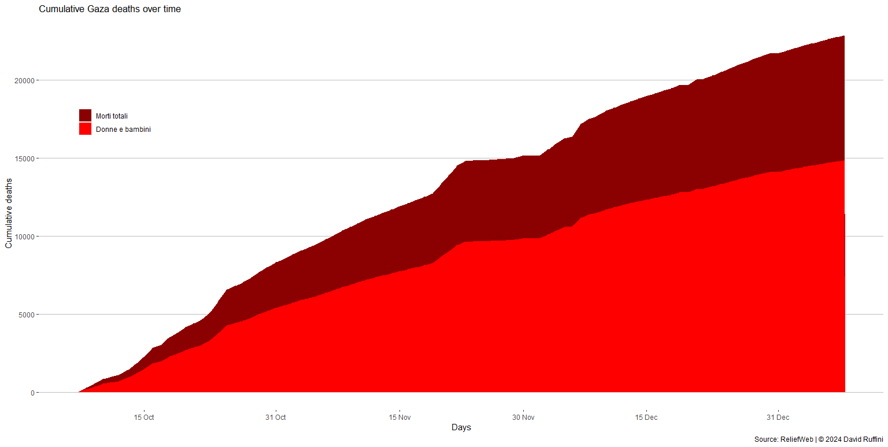

Le bombe utilizzate a Gaza
Le tipologie e le loro caratteristiche
In seguito all'attacco di Hamas al popolo israeliano del 7 ottobre, il quale ha provocato la morte di circa 1400 civili e il rapimento di quasi 250 ostaggi, le IDF (Israel Defence Forces) hanno iniziato una lunga serie di bombardamenti sulla Striscia di Gaza volti ad annientare il gruppo terroristico.
Il diritto internazionale umanitario prevede il principio di distinzione, cioè l'obbligo di dirigere gli attacchi verso combattenti e obiettivi militari, preservando la vita dei civili e dei loro beni. La presenza di tunnel sotteranei nella Striscia, utilizzati dai miliziani, rende però complesso il rispetto di questo fondamento e a pagarne le conseguenze sono i civili palestinesi.

Decessi dall'inizio dei bombardamenti all'8 gennaio.
In circa 3 mesi di conflitto nei territori palestinesi sono morte 22835 persone di cui circa il 70% sono donne e bambini. I feriti per ora sono 58416.
Per quanto riguarda l'affidabilità dei dati è lecito avere dubbi sulla provenienza degli stessi, visto che è il Ministero della Salute guidato da Hamas a fornirli. Una ricerca pubblicata su Lancet il 6 dicembre 2023, mostra come i numeri, provenienti dalla stessa fonte, di conflitti passati si siano rivelati successivamente non distorti e sostiene che anche nella guerra in corso i numeri non siano stati gonfiati.
Feriti dall'inizio dei bombardamenti all'8 gennaio.
Va fatto notare che il conteggio dei feriti comporta più difficoltà e spesso il numero rimaneva invariato per più giorni. Un'altra nota è che nei dati consultati non c'era una più grande classificazione, quindi la percentuale di donne e bambini sul totale è stata approssimata al 65% seguendo i valori relativi ai decessi.
Attualmente il civilian casualties ratio sembrerebbe attestarsi a 2:1, quindi per ogni combattente ucciso perdono la vita due civili. Il portavoce delle IDF Jonathan Conricus, intervistato dalla CNN, ha affermato che una proporzione pari a quella descritta precedentemente è più che positiva per un conflitto che vede una parte, Hamas, utilizzare i civili come scudi umani e che si realizza all'interno di una delle aree più densamente popolate del pianeta, come la Striscia di Gaza. Nonostante i confronti con il passato siano spesso fuorvianti può essere utile ricordare che nella Seconda guerra mondiale il rapporto, in determinati eventi, fu lo stesso.
Ma quanti sono i palestinesi che supportano gli ideali estremisti e terroristici di Hamas? Per rispondere è importante prendere incconsiderazione sia sondaggi realizzati prima dei bombardamenti di Israele che dopo.
Arab Barometer ne propone uno realizzato tra il 28 settembre 2023 e l'8 ottobre 2023 dove alla domanda "Quanta fiducia riponi in un governo guidato da Hamas" circa il 45% dei palestinesi ha risposto con "Nessuna" e circa il 25% con "Non molta". Inoltre, altri risultati della stessa indagine, affermano che il 73% dei palestinesi vorrebbero una soluzione pacifica al conflitto israelo-palestinese.
Il secondo sondaggio, condotto da AWRAD , copre invece il periodo che va dal 31 ottobre al 7 novembre e mostra una realtà differente: alla domanda "Quanto sei favorevole all'operazione guidata da Hamas del 7 ottobre?" quasi il 60% ha risposto con "Estremamente favorevole" e circa il 15% con "In qualche modo favorevole". Stando alla ricerca, l'appoggio ad Hamas sembra quindi essere aumentato, infatti circa il 48% e il 28% dei rispondenti si dichiara rispettivamente molto ottimista e in qualche modo ottimista sul ruolo del partito terrorista.
I risultati di entrambi i sondaggi vanno presi cum grano salis, ma ciò che si nota è una popolazione principalmente in favore di una soluzione pacifica, che in seguito ai bombardamenti ha drasticamente cambiato idea.
Ciao!
Mi chiamo David, sono (sarò) uno statistico e in questo sito raccoglierò le mie analisi su argomenti che trovo di mio interesse.
I motivi principali che mi hanno spinto a pubblicare le mie ricerche sono il voler dare ordine a ciò che prima vagava solamente tra le cartelle del desktop e condividere con gli altri i risultati delle suddette indagini.
Se siete in disaccordo, riconoscete un mio errore o per qualsiasi altro motivo volete scrivermi, potete contattarmi nei canali che ho messo in fondo alla pagina.